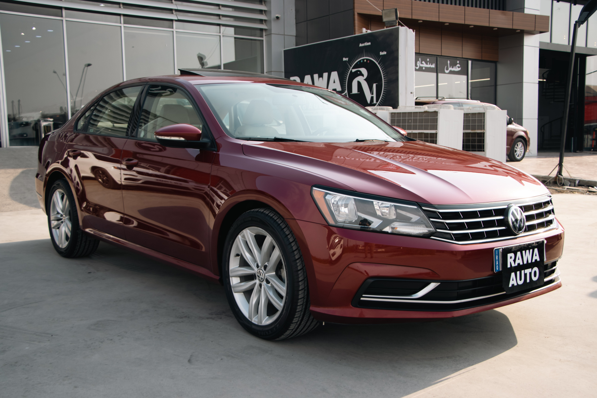

Passat
O Passat é um classico do automobilismo, porém esse é o modelo mais moderno. O carro tem um motor de 211CV onde é um carro que entrega conforto e desempenho. O seu motor faz em tormo de 7 segundos de 0-60mph (96km/h), o que é um bom tempo
Alem disso o carro tem um conjunto equilibrado onde condegue fazer curvas com certa facilidade, alem do seu centro de gravidade que é baixo. O Carro também engana por ser um carro com cara de tiozão
É um dos carros que eu mais gosto, pois ele é gostoso de guiar, tem o seu cambio DSG de Dupla Embreagem, que é uma referencia. Os cambios do Audi e da BMW são os cambios que se assemelham muito ao modelo em si.